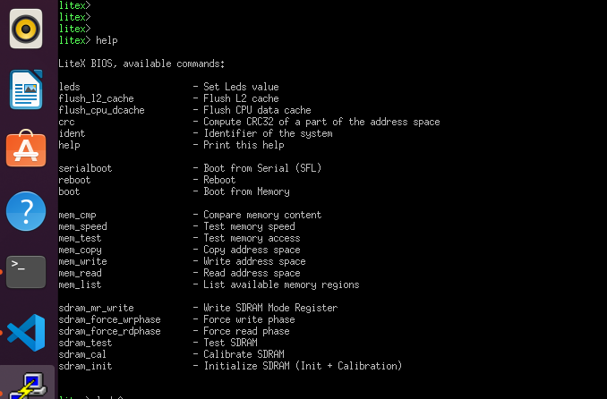
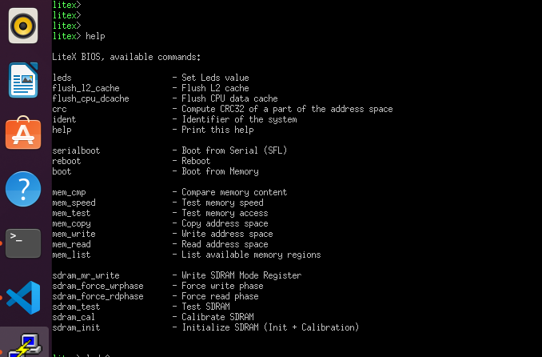
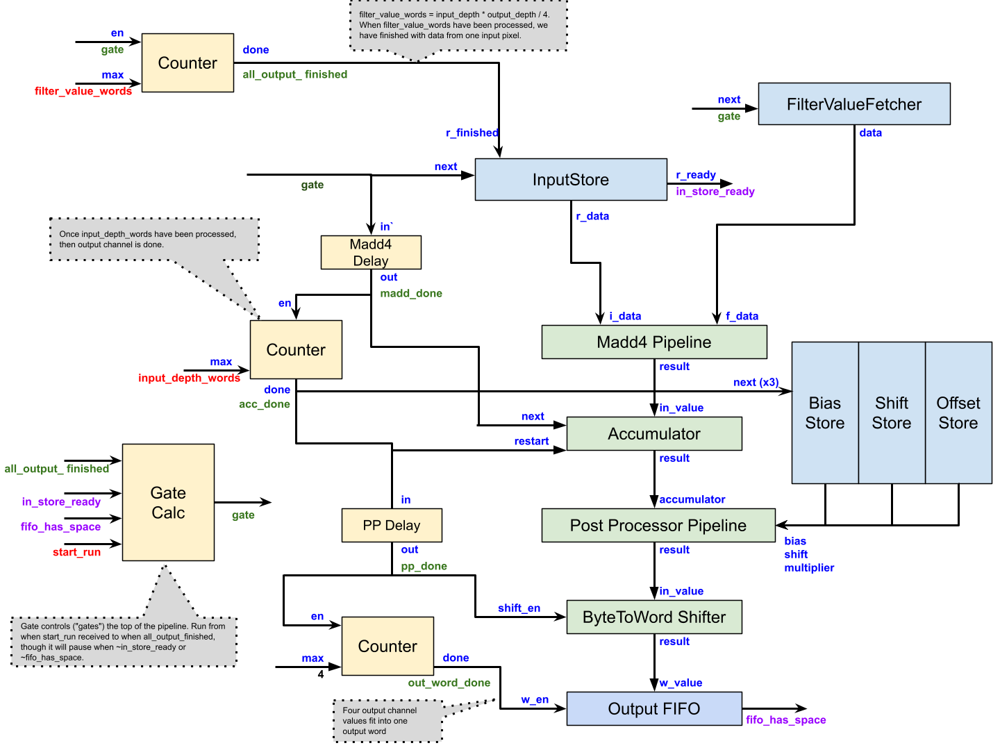

CFU-Playground
一共支持3种运行环境，分别是Arty A7, Renode和Verilator simulation
To run on Arty
$ make prog //builds and program gateware $ make prog TARGET=digilent_arty USE_SYMBIFLOW=1 $ make load //builds and load C program (BIOS)
make load成功后会进入串口界面，如下图所示：
 也可以用其他串口工具(比如Putty)，默认波特率是1843200(在proj.mk中定义)

也可以用其他串口工具(比如Putty)，默认波特率是1843200(在proj.mk中定义)
To run on renode
$ make renode
To run in simulation
$ make load PLATFORM=sim
Build Flow
proj/proj.mk
soc/common_soc.mk
CONFIG_CPU_PERF_CSRS
Profiling
CONFIG_CPU_PERF_CSRS
怎么使能profiler counter EXTRA_LITEX_ARGS=“–cpu-variant=perf+cfu”
串口
Tera Term
Accelerator
MobileNetV2
1x1xN 2D convolution operation accelerator for TfLM on an FPGA that increase performance by 100x.

63% 1x1 2D Convolution
22.5% Depthwise convolution
11% 3x3 2D Convolution
CFU_MACC_RUN Design
